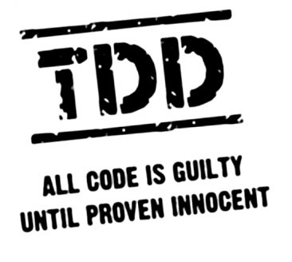

Tests unitaires et
Test Driven Development (TDD)
en C++ avec GoogleTest
Succès réussi : titre de présentation très long !
Introduction
Quelques citations (certaines vécues)
Nos responsables nous demandent de faire de l'agile et des tests unitaires.
Le chef de projet a lu un article à propos du TDD et a décidé d'en faire.
Les tests unitaires, c'est une perte de temps.
On fait des tests unitaires pour montrer au client qu'on teste le logiciel.
Motivations
- Démystifier les croyances sur le TDD et les tests unitaires notamment nées des croyances sur l'agile.
- Proposer une méthode de développement qui facilite avant tout la vie des développeurs.
Introduction (2)
Objectifs
- Présenter les tests unitaires et le TDD.
- Présenter une solution de tests unitaires en C++.
Public visé
- Développeurs novices ou expérimentés en C++ (quelques bases sont requises).
- Novices en TDD qui souhaitent découvrir la méthode.
- Experts en TDD qui cherchent une solution en C++.
Introduction (3)
Spéciale dédicace
I'm not a great programmer; I'm just a good programmer with great habits.
Kent Beck créateur de XP et figure principale du TDD dans Refactoring: Improving the Design of Existing Code.

Agenda
-
Introduction au test unitaire, au TDD et au framework GoogleTest
-
Etude approfondie de GoogleTest, introduction de GoogleMock
-
Application des concepts appris sur des cas pratiques
Tests unitaires et
TDD en C++
avec GoogleTest
Session n°1
Session n°1
-
Tests unitaires et TDD
Introduction à la théorie du test unitaire et aux principes du développement piloté par les tests
-
GoogleTest Framework
Lancement dans le framework C++ léger de test maintenu par Google
-
Etude de cas pratique
Etude d'un petit cas pratique et tentative d'implémention de quelques tests unitaires
Tests unitaires et TDD
Tests unitaires
Définition
Un processus qui vérifie qu'une unité individuelle de code fait ce qu'elle est sensée faire.
Il est écrit par un développeur et fait partie du cycle de développement (et non du cycle de validation).
Unité de code
- une fonction
- une fonctionnalité (use-case)
- une classe
- un module
- une bibliothèque
- etc
Tout groupe de code qui peut être isolé.
Tests unitaires (2)
Caractéristiques
-
Il est entièrement automatisé
Pas de tests manuels ici -
Il est déterministe
Pas d'aléatoire ou de jardinage, 2 lancements => 2x le même résultat -
Il est isolé
Exécution en mémoire et pas d'I/O (fichiers, réseau, BDD, IPC, ...) -
Il contrôle ce qu'il teste
Il isole le code testé par des mocks/stubs (bouchons) -
Il est digne de confiance
Pas de faux positif ! -
Il est rapide à exécuter
Un test lent est une contrainte et perd tout intérêt
Tests unitaires (3)
En bonus
-
Less is more
Petit et léger vaut mieux que gros et lourd -
Il sert de documentation ou d'exemple
Il est une application directe du code -
Il donne à son créateur un air intelligent

Tests unitaires (4)
Jeu des 7 erreurs
- Tests de validation ou tests usines ou recette
- Tests système ou tests fonctionnels ou homologation
- Tests d'intégration ou tests techniques
- Tests unitaires

Unit tests confirm that we have build the software right. Acceptance tests confirm that we have built the right software.
TDD
Définition
Test Driven Development en français développement piloté par les tests.
Une méthode de développement qui consiste à écrire un test unitaire pour chaque fonctionnalité avant de l'implémenter.
La façon dont est écrit le test décide de la façon dont est implémentée la fonctionnalité.
TDD (2)
Cycle basique
- Ecriture d'un test unitaire.
- Vérification que le test unitaire échoue.
- Implémentation du code le plus simple et naïf possible qui fasse passer le test.
- Vérification que le test unitaire passe.
- Remaniement du code pour l'améliorer.
TDD (3)
Avantages
- On se concentre sur le besoin : le test exprime le besoin.
- Pas de sur-réflexion sur le design : le test décide.
- Le code est générique : le test force l'isolation des composants et donc leur généricité.
- Le code est simple.
- Les fonctionnalités sont testés : les régressions sont surveillées.
Inconvénients
- Ecrire des tests est chronophage.
- C'est contraignant.
Mais
C'est une habitude à prendre. Les avantages finissent par rendre la tâche confortable et le temps
perdu est vite rentabilisé.
TDD (4)
En pratique
Dans la réalité, le TDD est plus complexe à appliquer.
- Cas utilisateur (use-case) difficiles à exprimer en tests.
- Base de tests existants à ne pas casser.
- Code historique (legacy code).
- Architecture inadaptée (bad design).
- Manque de temps / hiérarchie en opposition.
C'est un outil qui demande de la rigueur. Il est difficile à appliquer quand on l'utilise de la mauvaise façon.
Il ne résoud pas les problèmes, il les empêche. Il ne s'adapte pas à une méthodologie, il l'impose.
- Un use-case complexe à exprimer en test est un use-case à reformuler.
- Il faut isoler les tests existants lorsqu'on en écrit des nouveaux.
- Il faut procéder par étapes et isoler les composants un à un sur une base de code historique.
- Le remaniement s'impose : inutile de tenter de tester une architecture inadaptée en la hackant.
Would you rather Test-First or Debug-Later ?
Robert Cecil Martin, co-auteur de The Agile Manifesto.
TDD (5)
Cycle complet

GoogleTest C++ framework
GoogleTest
Qu'est-ce que c'est ?
Une bibliothèque C++ maintenue par Google proposant des fonctions de test similaire à CppUnit ou BoostTest.
Disponible sur Github : https://github.com/google/googletest
GoogleTest (2)
Motivation
- Elle est légère.
- Elle est complète.
- Elle est cross-platform et se compile avec CMake.
- Elle est de plus en plus populaire et reconnue.
- Elle est activement maintenue.
- Elle inclut une bibliothèque de mocking GoogleMock (prochaine session).
GoogleTest (3)
Utilisation
Pour commencer : https://github.com/google/googletest/blob/master/googletest/docs/Primer.md
-
#include <gtest/gtest.h> TEST(MyTestCaseName, MyTestName) { ... test code ... } -
#include <gtest/gtest.h> int main(int argc, char **argv) { ::testing::InitGoogleTest(&argc, argv); return RUN_ALL_TESTS(); }
GoogleTest (4)
Terminologie
Test program
Programme contenant plusieurs cas de test (test cases).
Test case
Cas de test, groupe de tests liés ensemble par un but commun.
Test
Ensemble d'assertions et/ou d'attentes qui vérifient le comportement d'un code ciblé.
GoogleTest (5)
Assertions / attentes
Les tests s'expriment par des macros d'attente (EXPECT) ou d'assertion (ASSERT).
Les attentes et les assertions affichent un message d'erreur lorsqu'elles échouent, mais les assertions terminent aussi le test courant.
| Assertion | Attente | Vérifie que |
|---|---|---|
ASSERT_TRUE(condition); | EXPECT_TRUE(condition); | condition est vraie. |
ASSERT_FALSE(condition); | EXPECT_FALSE(condition); | condition est fausse. |
ASSERT_EQ(val1, val2); | EXPECT_EQ(val1, val2); | val1 == val2 |
ASSERT_NE(val1, val2); | EXPECT_NE(val1, val2); | val1 != val2 |
ASSERT_LT(val1, val2); | EXPECT_LT(val1, val2); | val1 < val2 |
ASSERT_LE(val1, val2); | EXPECT_LE(val1, val2); | val1 ≤ val2 |
ASSERT_GT(val1, val2); | EXPECT_GT(val1, val2); | val1 > val2 |
ASSERT_GE(val1, val2); | EXPECT_GE(val1, val2); | val1 ≥ val2 |
GoogleTest (6)
Exemple basique
int add(int a, int b)
{
return a + b;
}
TEST(Add, Basic)
{
EXPECT_EQ(8, add(5, 3));
}
TEST(Add, Commutative)
{
EXPECT_EQ(add(13, 42), add(42, 13)); // a + b = b + a
}
TEST(Add, Associative)
{
EXPECT_EQ(add(8, add(9, 15)), add(add(8, 9), 15)); // a + (b + c) = (a + b) + c
}
TEST(Add, Negative)
{
EXPECT_EQ(12, add(17, -5));
}GoogleTest (7)
Fixtures
Définition
Classe servant à factoriser le code utilisé pour l'initialisation des tests d'un cas de test.
Dans GoogleTest, elles héritent de ::testing::Test.
Elles peuvent réimplémenter les méthodes SetUp et TearDown.
Les macros TEST(TestCase, Test) deviennent TEST_F(Fixture, Test).
GoogleTest (8)
Fixtures (2)
Exemple
struct Adder
{
Adder(int a) : _a(a) {}
int add(int b) { return _a + b;}
int _a;
};
class MyFixture : public ::testing::test
{
protected:
void SetUp() override
{
_adder = new Adder(42);
}
void TearDown() override
{
delete _adder;
}
Adder* _adder;
}
TEST_F(MyFixture, Basic)
{
EXPECT_EQ(58, _adder->add(16));
}
TEST_F(MyFixture, Negative)
{
EXPECT_EQ(27, _adder->add(-15));
}Cas pratiques
Cas pratiques
Fibonacci
Objectif
Implémenter une fonction int fibonacci(int n); qui retourne le n-ième chiffre de
la suite de Fibonacci en appliquant le TDD.
Comment
- Récupérer le dépôt git : https://git-totem.devenly.fr/vpalancher/formation_cpp
- Ouvrir le CMakeLists.txt dans l'IDE favori.
- Configurer votre projet (compilateur, chemins, etc).
- Coder : les fichiers à remplir sont dans le dossier sessions/tdd/1/practical_cases/fibonacci :
- test.cpp
- fibonacci.cpp
- fibonacci.hpp (facultatif, si besoin)
Cas pratiques
Reverse Polish Notation (RPN)
Objectif
Implémenter une fonction int rpn::interpret(const std::string& expr); qui retourne le résultat de l'expression RPN passée en paramètre.
On lèvera une exception en cas d'erreur d'interprétation.
Comment
- Les fichiers à remplir sont dans le dossier sessions/tdd/1/practical_cases/rpn :
- test.cpp
- rpn.cpp
- rpn.hpp (facultatif, si besoin)
- Le fichier rpn.hpp contient des instructions et des détails.
Prochaine session
Prochaine session
- Présentation de fonctions avancées de GoogleTest
- Comparaison de flottants
- Gestion d'exceptions
- Utilisation de prédicats
- Tests paramétrés
- Tests typés
- Tester du code privé
- Introduction au framework GoogleMock
- Application de cas pratiques
Références
- http://artofunittesting.com/definition-of-a-unit-test/
- http://softwaretestingfundamentals.com/unit-testing/
- https://stackoverflow.com/questions/652292/what-is-unit-testing-and-how-do-you-do-it
- https://fr.wikipedia.org/wiki/Test_(informatique)
- Kent Beck, Test Driven Development : By Example, Addison-Wesley Professional
/